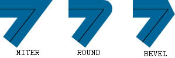
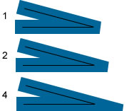

| Language Version: | ActionScript 3.0 |
| Runtime Versions: | Flash Player 10, AIR 1.5 |
Defines a line style or stroke.
Use a GraphicsStroke object with the Graphics.drawGraphicsData() method.
Drawing a GraphicsStroke object is the equivalent of calling one of the methods of the Graphics
class that sets the line style, such as the Graphics.lineStyle() method, the
Graphics.lineBitmapStyle() method, or the Graphics.lineGradientStyle()
method.
caps:String| Language Version: | ActionScript 3.0 |
| Runtime Versions: | Flash Player 10, AIR 1.5 |
Specifies the type of caps at the end
of lines. Valid values are: CapsStyle.NONE, CapsStyle.ROUND, and CapsStyle.SQUARE.
If a value is not indicated, Flash uses round caps.
For example, the following illustrations show the different capsStyle
settings. For each setting, the illustration shows a blue line with a thickness of 30 (for
which the capsStyle applies), and a superimposed black line with a thickness of 1
(for which no capsStyle applies):

Implementation public function get caps():String public function set caps(value:String):voidSee also
public var fill:IGraphicsFill| Language Version: | ActionScript 3.0 |
| Runtime Versions: | Flash Player 10, AIR 1.5 |
Specifies the instance containing data for filling a stroke. An IGraphicsFill
instance can represent a series of fill commands.
See also
joints:String| Language Version: | ActionScript 3.0 |
| Runtime Versions: | Flash Player 10, AIR 1.5 |
Specifies the type of joint appearance
used at angles. Valid
values are: JointStyle.BEVEL, JointStyle.MITER, and JointStyle.ROUND.
If a value is not indicated, Flash uses round joints.
For example, the following illustrations show the different joints
settings. For each setting, the illustration shows an angled blue line with a thickness of
30 (for which the jointStyle applies), and a superimposed angled black line with a
thickness of 1 (for which no jointStyle applies):

Note: For joints set to JointStyle.MITER,
you can use the miterLimit parameter to limit the length of the miter.
Implementation public function get joints():String public function set joints(value:String):voidSee also
public var miterLimit:Number| Language Version: | ActionScript 3.0 |
| Runtime Versions: | Flash Player 10, AIR 1.5 |
Indicates the limit at which a miter is cut off.
Valid values range from 1 to 255 (and values outside that range are rounded to 1 or 255).
This value is only used if the jointStyle
is set to "miter". The
miterLimit value represents the length that a miter can extend beyond the point
at which the lines meet to form a joint. The value expresses a factor of the line
thickness. For example, with a miterLimit factor of 2.5 and a
thickness of 10 pixels, the miter is cut off at 25 pixels.
For example, consider the following angled lines, each drawn with a thickness
of 20, but with miterLimit set to 1, 2, and 4. Superimposed are black reference
lines showing the meeting points of the joints:

Notice that a given miterLimit value has a specific maximum angle
for which the miter is cut off. The following table lists some examples:
miterLimit value: | Angles smaller than this are cut off: |
|---|
| 1.414 | 90 degrees |
| 2 | 60 degrees |
| 4 | 30 degrees |
| 8 | 15 degrees |
public var pixelHinting:Boolean| Language Version: | ActionScript 3.0 |
| Runtime Versions: | Flash Player 10, AIR 1.5 |
Specifies whether to hint strokes
to full pixels. This affects both the position of anchors of a curve and the line stroke size
itself. With pixelHinting set to true, Flash Player hints line widths
to full pixel widths. With pixelHinting set to false, disjoints can
appear for curves and straight lines. For example, the following illustrations show how
Flash Player renders two rounded rectangles that are identical, except that the
pixelHinting parameter used in the lineStyle() method is set
differently (the images are scaled by 200%, to emphasize the difference):
scaleMode:String| Language Version: | ActionScript 3.0 |
| Runtime Versions: | Flash Player 10, AIR 1.5 |
Specifies the stroke thickness scaling. Valid values are:
-
LineScaleMode.NORMAL—Always scale the line thickness when the object is scaled
(the default).
-
LineScaleMode.NONE—Never scale the line thickness.
-
LineScaleMode.VERTICAL—Do not scale the line thickness if the object is scaled vertically
only. For example, consider the following circles, drawn with a one-pixel line, and each with the
scaleMode parameter set to LineScaleMode.VERTICAL. The circle on the left
is scaled vertically only, and the circle on the right is scaled both vertically and horizontally:

-
LineScaleMode.HORIZONTAL—Do not scale the line thickness if the object is scaled horizontally
only. For example, consider the following circles, drawn with a one-pixel line, and each with the
scaleMode parameter set to LineScaleMode.HORIZONTAL. The circle on the left
is scaled horizontally only, and the circle on the right is scaled both vertically and horizontally:

Implementation public function get scaleMode():String public function set scaleMode(value:String):voidSee also
public var thickness:Number| Language Version: | ActionScript 3.0 |
| Runtime Versions: | Flash Player 10, AIR 1.5 |
Indicates the thickness of the line in
points; valid values are 0-255. If a number is not specified, or if the
parameter is undefined, a line is not drawn. If a value of less than 0 is passed,
the default is 0. The value 0 indicates hairline thickness; the maximum thickness
is 255. If a value greater than 255 is passed, the default is 255.
public function GraphicsStroke(thickness:Number = NaN, pixelHinting:Boolean = false, scaleMode:String = "normal", caps:String = "none", joints:String = "round", miterLimit:Number = 3.0, fill:IGraphicsFill = null)| Language Version: | ActionScript 3.0 |
| Runtime Versions: | Flash Player 10, AIR 1.5 |
Creates a new GraphicsStroke object.
Parameters | thickness:Number (default = NaN) |
| |
| pixelHinting:Boolean (default = false)pixelHinting set to true, Flash Player hints line widths
to full pixel widths. With pixelHinting set to false, disjoints can
appear for curves and straight lines. For example, the following illustrations show how
Flash Player renders two rounded rectangles that are identical, except that the
pixelHinting parameter used in the lineStyle() method is set
differently (the images are scaled by 200%, to emphasize the difference):
If a value is not supplied, the line does not use pixel hinting.
|
| |
| scaleMode:String (default = "normal")-
LineScaleMode.NORMAL—Always scale the line thickness when the object is scaled
(the default).
-
LineScaleMode.NONE—Never scale the line thickness.
-
LineScaleMode.VERTICAL—Do not scale the line thickness if the object is scaled vertically
only. For example, consider the following circles, drawn with a one-pixel line, and each with the
scaleMode parameter set to LineScaleMode.VERTICAL. The circle on the left
is scaled vertically only, and the circle on the right is scaled both vertically and horizontally:
-
LineScaleMode.HORIZONTAL—Do not scale the line thickness if the object is scaled horizontally
only. For example, consider the following circles, drawn with a one-pixel line, and each with the
scaleMode parameter set to LineScaleMode.HORIZONTAL. The circle on the left
is scaled horizontally only, and the circle on the right is scaled both vertically and horizontally:
|
| |
| caps:String (default = "none")CapsStyle.NONE, CapsStyle.ROUND, and CapsStyle.SQUARE.
If a value is not indicated, Flash uses round caps.
For example, the following illustrations show the different capsStyle
settings. For each setting, the illustration shows a blue line with a thickness of 30 (for
which the capsStyle applies), and a superimposed black line with a thickness of 1
(for which no capsStyle applies):
|
| |
| joints:String (default = "round")JointStyle.BEVEL, JointStyle.MITER, and JointStyle.ROUND.
If a value is not indicated, Flash uses round joints.
For example, the following illustrations show the different joints
settings. For each setting, the illustration shows an angled blue line with a thickness of
30 (for which the jointStyle applies), and a superimposed angled black line with a
thickness of 1 (for which no jointStyle applies):
Note: For joints set to JointStyle.MITER,
you can use the miterLimit parameter to limit the length of the miter.
|
| |
| miterLimit:Number (default = 3.0)jointStyle
is set to "miter". The
miterLimit value represents the length that a miter can extend beyond the point
at which the lines meet to form a joint. The value expresses a factor of the line
thickness. For example, with a miterLimit factor of 2.5 and a
thickness of 10 pixels, the miter is cut off at 25 pixels.
For example, consider the following angled lines, each drawn with a thickness
of 20, but with miterLimit set to 1, 2, and 4. Superimposed are black reference
lines showing the meeting points of the joints:
Notice that a given miterLimit value has a specific maximum angle
for which the miter is cut off. The following table lists some examples:
miterLimit value: | Angles smaller than this are cut off: |
|---|
| 1.414 | 90 degrees | | 2 | 60 degrees | | 4 | 30 degrees | | 8 | 15 degrees |
|
| |
| fill:IGraphicsFill (default = null) |
See also
© 2009 Adobe Systems Incorporated. All rights reserved.
Thu Feb 19 2009, 09:49 AM -08:00 GraphicsStroke GraphicsStroke GraphicsStroke GraphicsStroke GraphicsStroke GraphicsStroke GraphicsStroke GraphicsStroke GraphicsStroke GraphicsStroke GraphicsStroke GraphicsStroke GraphicsStroke GraphicsStroke GraphicsStroke GraphicsStroke GraphicsStroke GraphicsStroke GraphicsStroke GraphicsStroke GraphicsStroke GraphicsStroke GraphicsStroke GraphicsStroke GraphicsStroke GraphicsStroke GraphicsStroke GraphicsStroke GraphicsStroke GraphicsStroke GraphicsStroke GraphicsStroke GraphicsStroke GraphicsStroke GraphicsStroke GraphicsStroke GraphicsStroke GraphicsStroke GraphicsStroke GraphicsStroke GraphicsStroke GraphicsStroke GraphicsStroke GraphicsStroke GraphicsStroke GraphicsStroke GraphicsStroke GraphicsStroke GraphicsStroke GraphicsStroke GraphicsStroke GraphicsStroke GraphicsStroke GraphicsStroke GraphicsStroke GraphicsStroke GraphicsStroke GraphicsStroke GraphicsStroke GraphicsStroke GraphicsStroke GraphicsStroke GraphicsStroke GraphicsStroke GraphicsStroke GraphicsStroke GraphicsStroke GraphicsStroke GraphicsStroke GraphicsStroke GraphicsStroke GraphicsStroke GraphicsStroke GraphicsStroke GraphicsStroke GraphicsStroke GraphicsStroke GraphicsStroke GraphicsStroke GraphicsStroke GraphicsStroke GraphicsStroke GraphicsStroke GraphicsStroke GraphicsStroke GraphicsStroke GraphicsStroke GraphicsStroke GraphicsStroke GraphicsStroke GraphicsStroke GraphicsStroke GraphicsStroke GraphicsStroke GraphicsStroke GraphicsStroke GraphicsStroke GraphicsStroke GraphicsStroke GraphicsStroke GraphicsStroke GraphicsStroke GraphicsStroke GraphicsStroke GraphicsStroke GraphicsStroke GraphicsStroke GraphicsStroke GraphicsStroke GraphicsStroke GraphicsStroke GraphicsStroke GraphicsStroke GraphicsStroke GraphicsStroke GraphicsStroke GraphicsStroke GraphicsStroke GraphicsStroke GraphicsStroke GraphicsStroke GraphicsStroke GraphicsStroke GraphicsStroke GraphicsStroke GraphicsStroke GraphicsStroke GraphicsStroke GraphicsStroke GraphicsStroke GraphicsStroke GraphicsStroke GraphicsStroke GraphicsStroke GraphicsStroke GraphicsStroke GraphicsStroke GraphicsStroke GraphicsStroke GraphicsStroke GraphicsStroke GraphicsStroke GraphicsStroke GraphicsStroke GraphicsStroke GraphicsStroke GraphicsStroke GraphicsStroke GraphicsStroke GraphicsStroke GraphicsStroke GraphicsStroke GraphicsStroke GraphicsStroke GraphicsStroke GraphicsStroke GraphicsStroke GraphicsStroke GraphicsStroke GraphicsStroke GraphicsStroke GraphicsStroke GraphicsStroke GraphicsStroke GraphicsStroke GraphicsStroke GraphicsStroke GraphicsStroke GraphicsStroke GraphicsStroke GraphicsStroke GraphicsStroke GraphicsStroke GraphicsStroke GraphicsStroke GraphicsStroke GraphicsStroke GraphicsStroke GraphicsStroke GraphicsStroke GraphicsStroke GraphicsStroke GraphicsStroke GraphicsStroke GraphicsStroke GraphicsStroke GraphicsStroke GraphicsStroke GraphicsStroke GraphicsStroke GraphicsStroke GraphicsStroke GraphicsStroke GraphicsStroke GraphicsStroke GraphicsStroke GraphicsStroke GraphicsStroke GraphicsStroke GraphicsStroke GraphicsStroke GraphicsStroke GraphicsStroke GraphicsStroke GraphicsStroke GraphicsStroke GraphicsStroke GraphicsStroke GraphicsStroke GraphicsStroke GraphicsStroke GraphicsStroke GraphicsStroke GraphicsStroke GraphicsStroke GraphicsStroke GraphicsStroke GraphicsStroke GraphicsStroke GraphicsStroke GraphicsStroke GraphicsStroke GraphicsStroke GraphicsStroke GraphicsStroke GraphicsStroke GraphicsStroke GraphicsStroke GraphicsStroke GraphicsStroke GraphicsStroke GraphicsStroke GraphicsStroke GraphicsStroke GraphicsStroke GraphicsStroke GraphicsStroke GraphicsStroke GraphicsStroke GraphicsStroke GraphicsStroke GraphicsStroke GraphicsStroke GraphicsStroke GraphicsStroke GraphicsStroke GraphicsStroke GraphicsStroke GraphicsStroke GraphicsStroke GraphicsStroke GraphicsStroke GraphicsStroke GraphicsStroke GraphicsStroke GraphicsStroke GraphicsStroke GraphicsStroke GraphicsStroke GraphicsStroke GraphicsStroke GraphicsStroke GraphicsStroke GraphicsStroke GraphicsStroke GraphicsStroke GraphicsStroke GraphicsStroke GraphicsStroke GraphicsStroke GraphicsStroke GraphicsStroke GraphicsStroke GraphicsStroke GraphicsStroke GraphicsStroke GraphicsStroke GraphicsStroke GraphicsStroke GraphicsStroke GraphicsStroke GraphicsStroke GraphicsStroke GraphicsStroke GraphicsStroke GraphicsStroke GraphicsStroke GraphicsStroke GraphicsStroke GraphicsStroke GraphicsStroke GraphicsStroke GraphicsStroke GraphicsStroke GraphicsStroke GraphicsStroke GraphicsStroke GraphicsStroke GraphicsStroke GraphicsStroke GraphicsStroke GraphicsStroke GraphicsStroke GraphicsStroke GraphicsStroke GraphicsStroke GraphicsStroke GraphicsStroke GraphicsStroke GraphicsStroke GraphicsStroke GraphicsStroke GraphicsStroke GraphicsStroke GraphicsStroke GraphicsStroke GraphicsStroke GraphicsStroke GraphicsStroke GraphicsStroke GraphicsStroke GraphicsStroke GraphicsStroke GraphicsStroke GraphicsStroke GraphicsStroke GraphicsStroke GraphicsStroke GraphicsStroke GraphicsStroke GraphicsStroke GraphicsStroke GraphicsStroke GraphicsStroke GraphicsStroke GraphicsStroke GraphicsStroke GraphicsStroke GraphicsStroke GraphicsStroke GraphicsStroke GraphicsStroke GraphicsStroke GraphicsStroke GraphicsStroke GraphicsStroke GraphicsStroke GraphicsStroke GraphicsStroke GraphicsStroke GraphicsStroke GraphicsStroke GraphicsStroke GraphicsStroke GraphicsStroke GraphicsStroke GraphicsStroke GraphicsStroke GraphicsStroke GraphicsStroke GraphicsStroke GraphicsStroke GraphicsStroke GraphicsStroke GraphicsStroke GraphicsStroke GraphicsStroke GraphicsStroke GraphicsStroke GraphicsStroke GraphicsStroke GraphicsStroke GraphicsStroke GraphicsStroke GraphicsStroke GraphicsStroke GraphicsStroke GraphicsStroke GraphicsStroke GraphicsStroke GraphicsStroke GraphicsStroke GraphicsStroke GraphicsStroke GraphicsStroke GraphicsStroke GraphicsStroke GraphicsStroke GraphicsStroke GraphicsStroke GraphicsStroke GraphicsStroke GraphicsStroke GraphicsStroke GraphicsStroke GraphicsStroke GraphicsStroke GraphicsStroke GraphicsStroke GraphicsStroke GraphicsStroke GraphicsStroke GraphicsStroke GraphicsStroke GraphicsStroke GraphicsStroke GraphicsStroke GraphicsStroke GraphicsStroke GraphicsStroke GraphicsStroke GraphicsStroke GraphicsStroke GraphicsStroke GraphicsStroke GraphicsStroke GraphicsStroke GraphicsStroke GraphicsStroke GraphicsStroke GraphicsStroke GraphicsStroke GraphicsStroke GraphicsStroke GraphicsStroke GraphicsStroke GraphicsStroke GraphicsStroke GraphicsStroke GraphicsStroke GraphicsStroke GraphicsStroke GraphicsStroke GraphicsStroke GraphicsStroke GraphicsStroke GraphicsStroke GraphicsStroke GraphicsStroke GraphicsStroke GraphicsStroke GraphicsStroke GraphicsStroke GraphicsStroke GraphicsStroke GraphicsStroke GraphicsStroke GraphicsStroke GraphicsStroke GraphicsStroke GraphicsStroke GraphicsStroke GraphicsStroke GraphicsStroke GraphicsStroke GraphicsStroke GraphicsStroke GraphicsStroke GraphicsStroke GraphicsStroke GraphicsStroke GraphicsStroke GraphicsStroke GraphicsStroke GraphicsStroke GraphicsStroke GraphicsStroke GraphicsStroke GraphicsStroke GraphicsStroke GraphicsStroke GraphicsStroke GraphicsStroke GraphicsStroke GraphicsStroke GraphicsStroke GraphicsStroke GraphicsStroke GraphicsStroke GraphicsStroke GraphicsStroke GraphicsStroke GraphicsStroke GraphicsStroke GraphicsStroke GraphicsStroke GraphicsStroke GraphicsStroke GraphicsStroke GraphicsStroke GraphicsStroke GraphicsStroke GraphicsStroke GraphicsStroke GraphicsStroke GraphicsStroke GraphicsStroke GraphicsStroke GraphicsStroke GraphicsStroke
flash.display.GraphicsStroke flash.display.GraphicsStroke flash.display.GraphicsStroke flash.display.GraphicsStroke flash.display.GraphicsStroke flash.display.GraphicsStroke flash.display.GraphicsStroke flash.display.GraphicsStroke flash.display.GraphicsStroke flash.display.GraphicsStroke flash.display.GraphicsStroke flash.display.GraphicsStroke flash.display.GraphicsStroke flash.display.GraphicsStroke flash.display.GraphicsStroke flash.display.GraphicsStroke flash.display.GraphicsStroke flash.display.GraphicsStroke flash.display.GraphicsStroke flash.display.GraphicsStroke flash.display.GraphicsStroke flash.display.GraphicsStroke flash.display.GraphicsStroke flash.display.GraphicsStroke flash.display.GraphicsStroke flash.display.GraphicsStroke flash.display.GraphicsStroke flash.display.GraphicsStroke flash.display.GraphicsStroke flash.display.GraphicsStroke flash.display.GraphicsStroke flash.display.GraphicsStroke flash.display.GraphicsStroke flash.display.GraphicsStroke flash.display.GraphicsStroke flash.display.GraphicsStroke flash.display.GraphicsStroke flash.display.GraphicsStroke flash.display.GraphicsStroke flash.display.GraphicsStroke flash.display.GraphicsStroke flash.display.GraphicsStroke flash.display.GraphicsStroke flash.display.GraphicsStroke flash.display.GraphicsStroke flash.display.GraphicsStroke flash.display.GraphicsStroke flash.display.GraphicsStroke flash.display.GraphicsStroke flash.display.GraphicsStroke flash.display.GraphicsStroke flash.display.GraphicsStroke flash.display.GraphicsStroke flash.display.GraphicsStroke flash.display.GraphicsStroke flash.display.GraphicsStroke flash.display.GraphicsStroke flash.display.GraphicsStroke flash.display.GraphicsStroke flash.display.GraphicsStroke flash.display.GraphicsStroke flash.display.GraphicsStroke flash.display.GraphicsStroke flash.display.GraphicsStroke flash.display.GraphicsStroke flash.display.GraphicsStroke flash.display.GraphicsStroke flash.display.GraphicsStroke flash.display.GraphicsStroke flash.display.GraphicsStroke flash.display.GraphicsStroke flash.display.GraphicsStroke flash.display.GraphicsStroke flash.display.GraphicsStroke flash.display.GraphicsStroke flash.display.GraphicsStroke flash.display.GraphicsStroke flash.display.GraphicsStroke flash.display.GraphicsStroke flash.display.GraphicsStroke flash.display.GraphicsStroke flash.display.GraphicsStroke flash.display.GraphicsStroke flash.display.GraphicsStroke flash.display.GraphicsStroke flash.display.GraphicsStroke flash.display.GraphicsStroke flash.display.GraphicsStroke flash.display.GraphicsStroke flash.display.GraphicsStroke flash.display.GraphicsStroke flash.display.GraphicsStroke flash.display.GraphicsStroke flash.display.GraphicsStroke flash.display.GraphicsStroke flash.display.GraphicsStroke flash.display.GraphicsStroke flash.display.GraphicsStroke flash.display.GraphicsStroke flash.display.GraphicsStroke flash.display.GraphicsStroke flash.display.GraphicsStroke flash.display.GraphicsStroke flash.display.GraphicsStroke flash.display.GraphicsStroke flash.display.GraphicsStroke flash.display.GraphicsStroke flash.display.GraphicsStroke flash.display.GraphicsStroke flash.display.GraphicsStroke flash.display.GraphicsStroke flash.display.GraphicsStroke flash.display.GraphicsStroke flash.display.GraphicsStroke flash.display.GraphicsStroke flash.display.GraphicsStroke flash.display.GraphicsStroke flash.display.GraphicsStroke flash.display.GraphicsStroke flash.display.GraphicsStroke flash.display.GraphicsStroke flash.display.GraphicsStroke flash.display.GraphicsStroke flash.display.GraphicsStroke flash.display.GraphicsStroke flash.display.GraphicsStroke flash.display.GraphicsStroke flash.display.GraphicsStroke flash.display.GraphicsStroke flash.display.GraphicsStroke flash.display.GraphicsStroke flash.display.GraphicsStroke flash.display.GraphicsStroke flash.display.GraphicsStroke flash.display.GraphicsStroke flash.display.GraphicsStroke flash.display.GraphicsStroke flash.display.GraphicsStroke flash.display.GraphicsStroke flash.display.GraphicsStroke flash.display.GraphicsStroke flash.display.GraphicsStroke flash.display.GraphicsStroke flash.display.GraphicsStroke flash.display.GraphicsStroke flash.display.GraphicsStroke flash.display.GraphicsStroke flash.display.GraphicsStroke flash.display.GraphicsStroke flash.display.GraphicsStroke flash.display.GraphicsStroke flash.display.GraphicsStroke flash.display.GraphicsStroke flash.display.GraphicsStroke flash.display.GraphicsStroke flash.display.GraphicsStroke flash.display.GraphicsStroke flash.display.GraphicsStroke flash.display.GraphicsStroke flash.display.GraphicsStroke flash.display.GraphicsStroke flash.display.GraphicsStroke flash.display.GraphicsStroke flash.display.GraphicsStroke flash.display.GraphicsStroke flash.display.GraphicsStroke flash.display.GraphicsStroke flash.display.GraphicsStroke flash.display.GraphicsStroke flash.display.GraphicsStroke flash.display.GraphicsStroke flash.display.GraphicsStroke flash.display.GraphicsStroke flash.display.GraphicsStroke flash.display.GraphicsStroke flash.display.GraphicsStroke flash.display.GraphicsStroke flash.display.GraphicsStroke flash.display.GraphicsStroke flash.display.GraphicsStroke flash.display.GraphicsStroke flash.display.GraphicsStroke flash.display.GraphicsStroke flash.display.GraphicsStroke flash.display.GraphicsStroke flash.display.GraphicsStroke flash.display.GraphicsStroke flash.display.GraphicsStroke flash.display.GraphicsStroke flash.display.GraphicsStroke flash.display.GraphicsStroke flash.display.GraphicsStroke flash.display.GraphicsStroke flash.display.GraphicsStroke flash.display.GraphicsStroke flash.display.GraphicsStroke flash.display.GraphicsStroke flash.display.GraphicsStroke flash.display.GraphicsStroke flash.display.GraphicsStroke flash.display.GraphicsStroke flash.display.GraphicsStroke flash.display.GraphicsStroke flash.display.GraphicsStroke flash.display.GraphicsStroke flash.display.GraphicsStroke flash.display.GraphicsStroke flash.display.GraphicsStroke flash.display.GraphicsStroke flash.display.GraphicsStroke flash.display.GraphicsStroke flash.display.GraphicsStroke flash.display.GraphicsStroke flash.display.GraphicsStroke flash.display.GraphicsStroke flash.display.GraphicsStroke flash.display.GraphicsStroke flash.display.GraphicsStroke flash.display.GraphicsStroke flash.display.GraphicsStroke flash.display.GraphicsStroke flash.display.GraphicsStroke flash.display.GraphicsStroke flash.display.GraphicsStroke flash.display.GraphicsStroke flash.display.GraphicsStroke flash.display.GraphicsStroke flash.display.GraphicsStroke flash.display.GraphicsStroke flash.display.GraphicsStroke flash.display.GraphicsStroke flash.display.GraphicsStroke flash.display.GraphicsStroke flash.display.GraphicsStroke flash.display.GraphicsStroke flash.display.GraphicsStroke flash.display.GraphicsStroke flash.display.GraphicsStroke flash.display.GraphicsStroke flash.display.GraphicsStroke flash.display.GraphicsStroke flash.display.GraphicsStroke flash.display.GraphicsStroke flash.display.GraphicsStroke flash.display.GraphicsStroke flash.display.GraphicsStroke flash.display.GraphicsStroke flash.display.GraphicsStroke flash.display.GraphicsStroke flash.display.GraphicsStroke flash.display.GraphicsStroke flash.display.GraphicsStroke flash.display.GraphicsStroke flash.display.GraphicsStroke flash.display.GraphicsStroke flash.display.GraphicsStroke flash.display.GraphicsStroke flash.display.GraphicsStroke flash.display.GraphicsStroke flash.display.GraphicsStroke flash.display.GraphicsStroke flash.display.GraphicsStroke flash.display.GraphicsStroke flash.display.GraphicsStroke flash.display.GraphicsStroke flash.display.GraphicsStroke flash.display.GraphicsStroke flash.display.GraphicsStroke flash.display.GraphicsStroke flash.display.GraphicsStroke flash.display.GraphicsStroke flash.display.GraphicsStroke flash.display.GraphicsStroke flash.display.GraphicsStroke flash.display.GraphicsStroke flash.display.GraphicsStroke flash.display.GraphicsStroke flash.display.GraphicsStroke flash.display.GraphicsStroke flash.display.GraphicsStroke flash.display.GraphicsStroke flash.display.GraphicsStroke flash.display.GraphicsStroke flash.display.GraphicsStroke flash.display.GraphicsStroke flash.display.GraphicsStroke flash.display.GraphicsStroke flash.display.GraphicsStroke flash.display.GraphicsStroke flash.display.GraphicsStroke flash.display.GraphicsStroke flash.display.GraphicsStroke flash.display.GraphicsStroke flash.display.GraphicsStroke flash.display.GraphicsStroke flash.display.GraphicsStroke flash.display.GraphicsStroke flash.display.GraphicsStroke flash.display.GraphicsStroke flash.display.GraphicsStroke flash.display.GraphicsStroke flash.display.GraphicsStroke flash.display.GraphicsStroke flash.display.GraphicsStroke flash.display.GraphicsStroke flash.display.GraphicsStroke flash.display.GraphicsStroke flash.display.GraphicsStroke flash.display.GraphicsStroke flash.display.GraphicsStroke flash.display.GraphicsStroke flash.display.GraphicsStroke flash.display.GraphicsStroke flash.display.GraphicsStroke flash.display.GraphicsStroke flash.display.GraphicsStroke flash.display.GraphicsStroke flash.display.GraphicsStroke flash.display.GraphicsStroke flash.display.GraphicsStroke flash.display.GraphicsStroke flash.display.GraphicsStroke flash.display.GraphicsStroke flash.display.GraphicsStroke flash.display.GraphicsStroke flash.display.GraphicsStroke flash.display.GraphicsStroke flash.display.GraphicsStroke flash.display.GraphicsStroke flash.display.GraphicsStroke flash.display.GraphicsStroke flash.display.GraphicsStroke flash.display.GraphicsStroke flash.display.GraphicsStroke flash.display.GraphicsStroke flash.display.GraphicsStroke flash.display.GraphicsStroke flash.display.GraphicsStroke flash.display.GraphicsStroke flash.display.GraphicsStroke flash.display.GraphicsStroke flash.display.GraphicsStroke flash.display.GraphicsStroke flash.display.GraphicsStroke flash.display.GraphicsStroke flash.display.GraphicsStroke flash.display.GraphicsStroke flash.display.GraphicsStroke flash.display.GraphicsStroke flash.display.GraphicsStroke flash.display.GraphicsStroke flash.display.GraphicsStroke flash.display.GraphicsStroke flash.display.GraphicsStroke flash.display.GraphicsStroke flash.display.GraphicsStroke flash.display.GraphicsStroke flash.display.GraphicsStroke flash.display.GraphicsStroke flash.display.GraphicsStroke flash.display.GraphicsStroke flash.display.GraphicsStroke flash.display.GraphicsStroke flash.display.GraphicsStroke flash.display.GraphicsStroke flash.display.GraphicsStroke flash.display.GraphicsStroke flash.display.GraphicsStroke flash.display.GraphicsStroke flash.display.GraphicsStroke flash.display.GraphicsStroke flash.display.GraphicsStroke flash.display.GraphicsStroke flash.display.GraphicsStroke flash.display.GraphicsStroke flash.display.GraphicsStroke flash.display.GraphicsStroke flash.display.GraphicsStroke flash.display.GraphicsStroke flash.display.GraphicsStroke flash.display.GraphicsStroke flash.display.GraphicsStroke flash.display.GraphicsStroke flash.display.GraphicsStroke flash.display.GraphicsStroke flash.display.GraphicsStroke flash.display.GraphicsStroke flash.display.GraphicsStroke flash.display.GraphicsStroke flash.display.GraphicsStroke flash.display.GraphicsStroke flash.display.GraphicsStroke flash.display.GraphicsStroke flash.display.GraphicsStroke flash.display.GraphicsStroke flash.display.GraphicsStroke flash.display.GraphicsStroke flash.display.GraphicsStroke flash.display.GraphicsStroke flash.display.GraphicsStroke flash.display.GraphicsStroke flash.display.GraphicsStroke flash.display.GraphicsStroke flash.display.GraphicsStroke flash.display.GraphicsStroke flash.display.GraphicsStroke flash.display.GraphicsStroke flash.display.GraphicsStroke flash.display.GraphicsStroke flash.display.GraphicsStroke flash.display.GraphicsStroke flash.display.GraphicsStroke flash.display.GraphicsStroke flash.display.GraphicsStroke flash.display.GraphicsStroke flash.display.GraphicsStroke flash.display.GraphicsStroke flash.display.GraphicsStroke flash.display.GraphicsStroke flash.display.GraphicsStroke flash.display.GraphicsStroke flash.display.GraphicsStroke flash.display.GraphicsStroke flash.display.GraphicsStroke flash.display.GraphicsStroke flash.display.GraphicsStroke flash.display.GraphicsStroke flash.display.GraphicsStroke flash.display.GraphicsStroke flash.display.GraphicsStroke flash.display.GraphicsStroke flash.display.GraphicsStroke flash.display.GraphicsStroke flash.display.GraphicsStroke flash.display.GraphicsStroke flash.display.GraphicsStroke flash.display.GraphicsStroke flash.display.GraphicsStroke flash.display.GraphicsStroke flash.display.GraphicsStroke flash.display.GraphicsStroke flash.display.GraphicsStroke flash.display.GraphicsStroke flash.display.GraphicsStroke flash.display.GraphicsStroke flash.display.GraphicsStroke flash.display.GraphicsStroke flash.display.GraphicsStroke flash.display.GraphicsStroke flash.display.GraphicsStroke flash.display.GraphicsStroke flash.display.GraphicsStroke flash.display.GraphicsStroke flash.display.GraphicsStroke flash.display.GraphicsStroke flash.display.GraphicsStroke flash.display.GraphicsStroke flash.display.GraphicsStroke flash.display.GraphicsStroke flash.display.GraphicsStroke flash.display.GraphicsStroke flash.display.GraphicsStroke flash.display.GraphicsStroke flash.display.GraphicsStroke flash.display.GraphicsStroke flash.display.GraphicsStroke flash.display.GraphicsStroke flash.display.GraphicsStroke flash.display.GraphicsStroke flash.display.GraphicsStroke flash.display.GraphicsStroke flash.display.GraphicsStroke flash.display.GraphicsStroke flash.display.GraphicsStroke flash.display.GraphicsStroke flash.display.GraphicsStroke flash.display.GraphicsStroke flash.display.GraphicsStroke flash.display.GraphicsStroke flash.display.GraphicsStroke flash.display.GraphicsStroke flash.display.GraphicsStroke flash.display.GraphicsStroke flash.display.GraphicsStroke flash.display.GraphicsStroke flash.display.GraphicsStroke flash.display.GraphicsStroke flash.display.GraphicsStroke flash.display.GraphicsStroke flash.display.GraphicsStroke flash.display.GraphicsStroke flash.display.GraphicsStroke flash.display.GraphicsStroke flash.display.GraphicsStroke flash.display.GraphicsStroke flash.display.GraphicsStroke flash.display.GraphicsStroke flash.display.GraphicsStroke flash.display.GraphicsStroke flash.display.GraphicsStroke

 Hide Inherited Public Properties
Hide Inherited Public Properties Show Inherited Public Properties
Show Inherited Public Properties